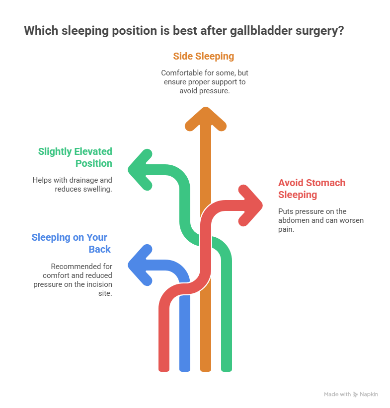
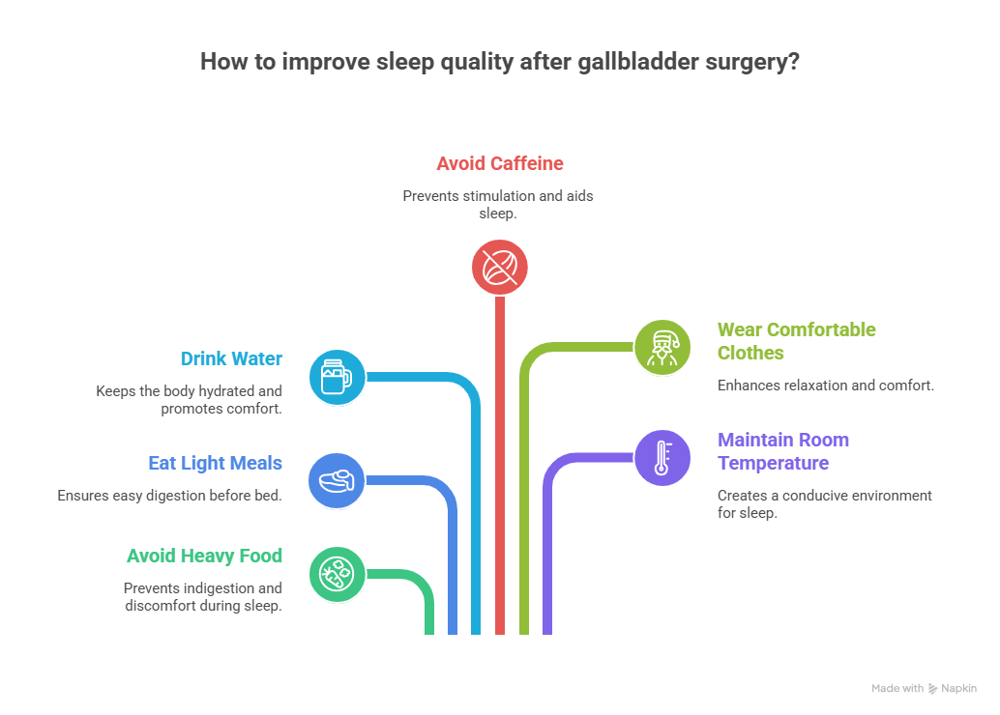

Getting proper rest after surgery is very important for healing. Many patients worry about how to sleep after gallbladder surgery, especially during the first few days. Whether you have undergone laparoscopic or open surgery, your body needs comfort, proper positioning, and enough rest to recover smoothly.
If you recently had Gallbladder Surgery in Delhi or anywhere else, understanding safe sleeping positions and pain management tips can help you recover faster. Experienced surgeons like Dr. Atul Peters always guide patients about post-surgery care, including how to rest properly without straining the healing area.
In this detailed guide, we will explain everything so you can sleep comfortably and safely after surgery.
How to Sleep After Gallbladder Surgery?
Learn how to sleep after gallbladder surgery with safe positions, pain relief tips, and recovery advice for better comfort and faster healing at home.
Book Your Appointment TodayUnderstanding Gallbladder Surgery
The gallbladder is a small, pear-shaped organ located beneath the liver on the right side of the abdomen. Its main role is to store bile, a digestive fluid that helps the body break down fats. When gallstones form or when the gallbladder becomes inflamed or infected, it can cause severe abdominal pain, nausea, vomiting, bloating, and digestive discomfort. In such cases, doctors may recommend removing the gallbladder through a surgical procedure called cholecystectomy. This surgery is commonly performed and is considered safe and effective for relieving recurring symptoms.
Main types of Gallbladder Surgery:
1. Laparoscopic Gallbladder Surgery
This is the most common method used today. Small cuts are made in the abdomen, and a tiny camera guides the surgeon during the procedure. It usually causes less pain and leaves minimal scars. Most patients recover quickly and can return to normal activities within 1–2 weeks.
2. Open Gallbladder Surgery
This method involves a larger incision in the abdomen and is generally recommended for complicated cases or severe infections. Recovery time is longer compared to laparoscopic surgery. Patients may need a few weeks to fully heal, and a hospital stay is usually slightly longer.
Best Sleeping Positions After Gallbladder Surgery
Getting proper rest after surgery is very important for healing. In the first few days, your abdomen may feel sore, tight, or bloated. Choosing the right sleeping position helps reduce pressure on the stitches, improves comfort, and supports faster recovery. Most patients find that simple adjustments in posture and pillow support make a big difference in sleep quality.

1. Sleeping on Your Back (Most Recommended)
Sleeping on your back is usually the safest and most comfortable position during the initial recovery phase. This position keeps your abdomen stable and prevents strain on the surgical area. It also reduces the risk of accidentally turning onto the stitches during sleep.
Helpful tips:
- Place a pillow under your knees to reduce lower back strain
- Use a small pillow near your abdomen for gentle support
- Slightly elevate your upper body with 1–2 pillows
2. Sleeping in a Slightly Elevated Position
Many patients feel more comfortable sleeping with their upper body slightly raised, especially during the first week. Elevation helps reduce gas discomfort and bloating, which are common after surgery. It also improves breathing and decreases pressure on the abdomen.
You can:
- Use multiple pillows behind your back
- Sleep in a recliner chair if available
- Avoid lying completely flat during the first few nights
3. Side Sleeping (When Comfortable)
After a few days to a couple of weeks—depending on your comfort—you may slowly try side sleeping. It is important to move gently and stop if you feel pain. Most people find side sleeping comfortable once swelling reduces.
For safer side sleeping:
- Use a pillow between your knees
- Place a small pillow against your stomach for support
- Avoid sudden twisting movements
4. Positions to Avoid
Some sleeping positions can strain your abdomen and delay healing. It is best to avoid them until you are fully recovered.
Avoid:
- Sleeping on your stomach
- Lying flat without support in the first few days
- Sudden turning or jerking movements
- Curling tightly into a fetal position
With proper positioning and support, most patients begin sleeping comfortably within one to two weeks. Always listen to your body and follow your doctor’s advice for a smooth recovery.
How to Sleep With Gallbladder Pain
Before surgery, many patients suffer severe pain and wonder how to sleep with gallbladder pain. Even after surgery, mild discomfort can disturb sleep.
Here are helpful tips:
Pain Management Tips
- Take prescribed pain medicines on time
- Avoid skipping medications at night
- Use a warm compress (if doctor approves)
- Practice deep breathing exercises
Gas Pain Relief
After laparoscopic surgery, gas is used to inflate the abdomen. This can cause shoulder and upper abdominal pain.
To reduce gas discomfort:
- Walk several times a day, slowly
- Avoid lying completely flat
- Drink warm water
- Avoid heavy meals at night
Step-by-Step Guide: How to Get Into Bed Safely
Getting into bed can strain your abdominal muscles. Follow these steps:
- Sit at the edge of the bed
- Lower your upper body slowly
- Use your arms to support your weight
- Swing legs onto the bed gently
- Avoid sudden twisting
To get out of bed:
- Roll to your side first
- Use your arms to push yourself up
- Lower legs off the bed slowly
This technique protects your stitches.
How Long Does Sleeping Discomfort Last?
Most patients feel:
- Mild discomfort for 5–7 days
- Significant improvement after 2 weeks
- Almost normal sleep after 3–4 weeks
Open surgery patients may take longer.
If you had Gallbladder Surgery in Delhi under an experienced surgeon like Dr. Atul Peters, proper post-surgery guidance usually ensures a smooth recovery.
Night-Time Care Tips After Gallbladder Surgery

To improve sleep quality:
- Avoid heavy or oily food at dinner
- Eat light meals 2–3 hours before bed
- Drink enough water
- Avoid caffeine after evening
- Wear loose, comfortable clothes
- Keep the room temperature comfortable
Foods That Help Better Sleep
After surgery, your digestive system needs time to adjust.
Choose:
- Soft foods
- Khichdi
- Oatmeal
- Boiled vegetables
- Soup
- Yogurt
Avoid:
- Fried food
- Spicy food
- Carbonated drinks
- Large fatty meals
Warning Signs – When to Call Your Doctor
Seek medical help if you experience:
- Severe pain while lying down
- Fever
- Redness or discharge from stitches
- Vomiting
- Severe bloating
- Persistent inability to sleep due to pain
Common Mistakes to Avoid
- Sleeping flat immediately after surgery
- Turning suddenly in bed
- Ignoring pain medications
- Sleeping on the stomach
- Lifting heavy objects before bedtime
Emotional and Mental Health After Surgery
Sometimes anxiety can disturb sleep. It is normal to feel:
- Worried about stitches
- Fearful of turning in bed
- Nervous about recovery
Deep breathing, meditation, and reassurance from your surgeon help reduce anxiety.
When Will Sleep Return to Normal?
Most patients:
- Sleep better within 7–10 days
- Return to normal sleeping habits in 3–4 weeks
- Feel completely comfortable in 4–6 weeks
Healing speed varies from person to person.
How to Sleep After Gallbladder Surgery?
Learn how to sleep after gallbladder surgery with safe positions, pain relief tips, and recovery advice for better comfort and faster healing at home.
Book Your Appointment TodayFinal Thoughts
Learning how to sleep after gallbladder surgery is an important part of recovery. Proper positioning, pain management, and patience make a big difference. Whether you are recovering from Gallbladder Surgery or anywhere else, always follow your surgeon’s advice.
Experienced surgeons like Dr. Atul Peters emphasize post-operative care, including safe sleeping habits, to ensure smooth healing. Within a few weeks, most patients return to their normal sleeping patterns and daily routine comfortably. Take it slow, listen to your body, and give yourself time to heal.
Frequently Asked Questions
How to sleep after Gallbladder Surgery?
Sleeping on the right side after Gallbladder Surgery – is it safe?
When can I lay on my side after Gallbladder Surgery?
Is it ok to sleep on your side after gallbladder surgery?
How to sleep with Gallbladder pain before surgery?
How long does sleep discomfort last after Gallbladder Surgery?
Can I sleep on my stomach after Gallbladder Surgery?
Recommended Further Reading
Have Personal Health Questions?
Consult with Dr. Atul Peters and our expert multidisciplinary team at Max Smart Super Speciality Hospital, Saket, New Delhi.
Book Your Consultation